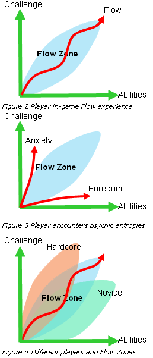

概述
本文提供了一种独特的电子游戏设计方法：在电子游戏中实现以玩家导向的动态难度调整（Dynamic Difficulty Adjustment，即 DDA），为不同类型的玩家创造更好的的游戏体验。
本文并非通过分析不完整的游戏数据来给玩家提供被动的 DDA体验，而是使用 Mihaly Csikszentmihalyi 的心流理论为玩家提供潜意识的选择,进而来帮助他们主动地定制最佳电子游戏体验。本文将主动的 DDA作为分析游戏的一个新参数，并试图解决为什么某些电子游戏比其他游戏具有更广泛的吸引力。
引言
动机
在过去的三十年里，作为一种娱乐形式，电子游戏已经从有限的街机活动发展成为一种成熟的媒体形式。它已经深深渗透到我们的日常社会生活中。就像玩具延伸了每个孩子的想象，现代电子游戏，得益于玩家主动的参与性，比其他现有的媒体开启了更多的可能性。越来越多的人玩着电子游戏长大，不仅仅把其看作一种艺术形式，还把它作为一种严肃的媒体。
然而，对于大多数非游戏玩家来说，电子游戏依然被认为是一种浅薄、催生攻击性的东西。看别人玩游戏和自己上手玩游戏之间的差别是巨大的。最有效地减少来自非游戏玩家的偏见和抗拒的方法是创造出他们想玩的游戏。当非游戏玩家能够找到一款他们也乐在其中的游戏，他们就不再会认为电子游戏浅薄了。
因为市场和商业的缘故，制作一款完全面向非游戏玩家的游戏太过于冒险和不现实。游戏开发者正在寻找能够拓宽其产品影响力的方式。通过获取现有的书籍或电影中的 IP (intellectual properties)来制作一款同时吸引游戏玩家和非游戏玩家的游戏并非难事。但是，制作一款同时能够让游戏玩家和非游戏玩家都乐在其中的游戏却是一个挑战。
当下，典型的商业游戏的质量和预算可以轻松达到 2000 万美元以上。讽刺的是，由于其内容的丰富性和流程长度，现在的大多数游戏玩家甚至无法通关他们的游戏。诚然，这些游戏对其目标受众来说可能没有问题，但对其他游戏玩家来说却过于无聊或过于有挑战性了。在这一点上，百万美元的生产价值(production values)是浪费的。
随着电子游戏市场的兴盛，一种能够适应不同类型玩家并且让他们都参与进来的电子游戏设计方法论亟需出现在下一世代的游戏中。
灵感
20 年以前，为了解释“幸福/快乐(happiness)”，Mihaly Csikszentmihalyi 发现了心流，即在一种行为中产生全神贯注的感觉，这种全神贯注具有高度的享受感和成就感。[Debold 2002]
Csikszentmihalyi 发展出一套理论来帮助人们进入心流状态。到目前为止，这套理论已经被用在了各种领域以设计出更好的人类交互体验。这套理论中最振奋人心的成就之一是定义了心流区域(Flow Zone)。

为了保持心流体验，这项行为需要在行为的挑战和参与者的能力之间找到平衡。如果挑战高过了参与者的能力，这项行为就会变得有压迫性并让参与者感到焦虑。如果挑战低于了参与者的能力，参与者就会感到无聊。幸运的是，人类具有耐受力，所以在心流区域中会有一个模糊的安全区。在那里，如果行为不是太难或者太无聊，焦虑和无聊等心理状态就不会发生 [Csikszentmihalyi 1990] 。因为挑战和能力之间的这种特殊关系，心流被用在了类似体育运动和教学当中。
对心流的描述与玩家完全沉浸在电子游戏中的体验是相同的。在这种体验中，玩家忘记了时间，忘记了所有外部压力。很明显，玩家对电子游戏的评价是基于这些游戏是否能提供心流体验。[Holt 2000]
因此，关于如何用心流来评估电子游戏体验的研究正在大量的被进行。然而目前只有少数研究人员在研究电子游戏中心流的实际运用问题。帮助游戏设计者实现并维持玩家的心流体验的方法论还并没有得到很好的定义。
总览
本文余下部分被分为了四个篇章：
- 在基础篇中，我们会更深入地探索 Mihaly Csikszentmihalyi 的心流理论，介绍 DDA（动态难度调整）的概念，并查看现有的关于 DDA 的研究和方法论。
- 在设计篇中，我们将深入讨论关于在电子游戏中运用心流和玩家导向的 DDA 的方法。
- 在应用篇中，展示了专门为测试玩家导向的 DDA 而创建的两个游戏以及它们的测试结果。
- 在结论篇中，我们将总结方法论，预告之后的研究方向，并展望心流在电子游戏以外的应用。
基础篇
心流作为乐趣
人们将很多感觉与 "乐趣 "联系在一起，永恒的感觉，交融的感觉，兴奋的感觉，专注的感觉，迫切的感觉。所有这些都是 "乐趣 "的特征。
一个普遍的共识是，如果没有了挑战和迎接挑战的能力之间的动态平衡，我们肯定不会拥有乐趣。有趣的是，让任何人都有可能找到恰如其分的挑战来调动到确切的能力，是获得心流的唯一途径。这意味着，当我们觉得工作变得有乐趣时，我们就创造了复杂但可完成的挑战，这些挑战允许个人参与或离开、允许更辛苦工作或更舒适地工作。 [Dekoven [DeepFun.com](http://deepfun.com/) ]
在这种情况下，乐趣可以被定义为心流，即挑战和能力之间的平衡。
心流的要素
根据 Mihaly Csikszentmihalyi 归档的研究和广泛的个人观察，心流有八个要素：
- 需求技巧的挑战
- 动作与意识的融合
- 清晰的目标
- 直接的反馈
- 对当下任务的专注
- 控制感
- 自我意识的丧失感
- 时间的扭曲
达到心流体验并不需要满足所有要素。一旦我们理解了上述内容，并从游戏设计的角度重新审视它们，我们会发现，电子游戏必须具备以下三个要素以唤起心流体验：
- （前提）游戏需要有内在回报，并且玩家是为了玩游戏而来玩游戏的
- 游戏提供了合适的、匹配玩家能力的挑战，使玩家能深入地研究游戏
- 玩家需要在游戏行为中有一种控制感
满足这三个要素的游戏会让玩家丧失时间感和自我意识。为了制作一个不同的人都能乐在其中的游戏，游戏本身必须保留这三个要素，特别是要根据每个玩家的能力来调整挑战难度。
动态难度调整
Dynamic Difficulty Adjustment，也被称为 DDA，是游戏设计领域中一个相当直接和理想的概念，即一个游戏的难度应该根据玩家的能力和表现而动态变化。然而，设计和运用 DDA 系统却不是易事。DDA 系统往往会把游戏的控制权从游戏设计者手中夺走，这可能会造成比线性游戏更多的问题。几乎没有商业开发者会在他们的游戏中使用 DDA 系统。[Arey & Wells 2001]
总的来说，DDA 只是心流要素的一部分（即上面的第二点），它不能独立地让玩家达到心流体验。与其专注于为游戏设计一个 DDA 系统，不如基于所有心流要素设计一个通用的心流系统，这对游戏设计者来说会更直接，也更有用。
设计篇
电子游戏作为一种媒体可以被分为两个基本组成部分：
- 游戏内容：电子游戏的灵魂；游戏所要传达的特定体验
- 游戏系统：电子游戏的身体；作为一个交互软件，通过视觉、听觉、交互将游戏内容传达给玩家
心流作为内容时，其定义非常宽泛。如果应用得当，心流可以发生在每个游戏中。但是，为了使一个游戏变得特别，一款电子游戏需要包含比心流体验更复杂的内容。
心流作为系统时，其解释了为什么人们更喜欢某些游戏而不是其他游戏，以及他们为何对这些游戏上瘾。如果一个游戏系统满足了心流的所有核心要素，任何内容都可能变得有价值，任何许诺都可能变得有吸引力。[Sweetser & Wyeth 2005]
从简单的俄罗斯方块到复杂的文明4，电子游戏已经向世界证明，如果玩家能够达到心流，任何事情都可以变得有趣。
拓展心流区域
假设游戏内容是吸引人的。电子游戏的设计基本上就是关于如何让玩家保持在心流体验中循序渐进地通关游戏。因此，游戏系统需要让不同玩家的游戏体验都在心流区域中。

红色曲线代表了一个玩家在游玩一段电子游戏时的实际体验。玩家可能觉得游戏体验的某个部分比他的预期要难一点或容易一点。但他依然可以忍受并保持他在心流区域内的体验。
如果实际体验与心流区域相去甚远，负面的心理情绪，像焦虑和无聊，就会破坏玩家的心流体验。不幸的是，就像指纹一样，不同的人有不同的能力和心流区域。一个精心设计的游戏可能会使普通玩家保持在心流状态，但对硬核或新手玩家来说就不那么有效。例如，对于一个 FPS 玩家来说一个简单的射击动作，对于刚刚开始游戏的休闲玩家可能是一项非常困难的任务。虽然这样的休闲玩家可能十分享受游戏的其余部分，但这样一个困难的开头就会让他们望而却步。
为了设计一个受众更广的游戏，游戏的体验不能是线性的和静态的。相反，它需要提供覆盖广泛的潜在体验，以适应不同玩家的心流区域。为了扩大游戏心流区域的覆盖，设计需要提供各种各样的游戏体验。从极其简单的任务到复杂的问题解决，不同的玩家应该总能找到最适合他的挑战难度，进而拥有心流体验。这些不同游戏体验的选择需要很明显，这样当玩家第一次开始游戏时，他们可以很容易地找到相应的、合适的游戏体验并深入其中。
创造动态心流
很多时候，玩家会把沉浸的游戏体验描述为 "调优得很好"。调优代表了游戏设计者使用游戏测试来迭代设计和手动打磨游戏体验，最后让其引起心流体验的过程。然而，随着电子游戏市场的扩大，基于游戏测试的游戏调优不能再满足大众的需求。
游戏测试通常是让多个测试人员一起去发现游戏中潜在的心流方面的问题。一方面，这些问题在微观层面上是显而易见的，例如崩溃、错别字、纹理缺陷和糟糕的文案。另一方面，从宏观层面来看，核心机制、情节安排、关卡难度和整体游戏进度的问题是难以发现的。而且，现在的游戏测试也是非常不连续的。每个测试员负责游戏的不同部分。由于这样缺少大局观的测试方式，宏观层面的心流从未被真正测试过。
游戏调优同时也表现出最终游戏体验的僵化和线性。因为体验是为了特定的测试人员和设计师而调整的，他们不能代表大众的多样性。这会导致心流区域在这些游戏中十分静态，以至于不能适应不同类型的游戏玩家。
为了给更多的观众实现最佳游戏体验，我们不仅需要提供广泛的心流区域覆盖，我们还需要一个高度自适应的系统来编织丰富的游戏体验，即基于玩家的情况调整心流体验。
被动的心流调整
心流调整中最大的难题在于是否应该创造一个系统来为玩家调整游戏性。这是一种被动的调整系统，因为玩家无法主动控制。在这种被动的系统下，玩家能够享受到由该系统提供的心流体验。
很多研究都着手于设计一个基于玩家表现来调整难度的系统。这种被动系统主导的 DDA 在迭代调优的循环下工作，，这种循环包括了四个基本要素：
- 玩家 Player - 在游玩过程中创造原始数据(raw data)
- 监控系统 Monitor System - 选择反映玩家心流状态的关键数据并传递给分析系统
- 分析系统 Analysis System - 分析玩家的心流状态并告知游戏系统需要做出哪些调整
- 游戏系统 Game System - 根据分析系统的要求对游戏玩法进行改变
理论上来说，这个系统应该能够通过不断地对从玩家那里收集的反馈做出反应来维持玩家的心流。[Bailey & Katchabaw 2005] 但是，这种循环有几个关键问题没有解决，这些关键问题进而导致这种被动的心流调整系统很难实现：
- 玩家 Player - 没有直接的数据。电子游戏还不能读取玩家的想法。到目前为止，玩家和电子游戏之间最常见的连接仍然是通过游戏控制器进行的。由于输入有限，直接感知玩家的心流状态的可能性非常低。虽然市场上有生物反馈设备，但人们仍然缺乏将数据成像为心流和情绪的技术。大多数的测量仍然是基于假设和不完整的统计
- 监控系统 Monitor System - 游戏表现并不能正确反映心流。电子游戏设计师和研究人员已经想出了办法，通过抽查有限的数据，如 "总杀伤力"、"准确度 "和 "爆头"，来估计玩家的游戏表现。然而，表现是客观的，而心流是主观的。当一个玩家在《超级马里奥》中一直跳来跳去，但没有完成任何关卡，被动的 DDA 系统将难以处理这种情况
- 分析系统 Analysis System - 基于假设的分析。假设永远都不能用于大众。当一个玩家喜欢在《侠盗猎车手》中表演自杀的特技时，如果 DDA 系统因为死亡次数而假设玩家的技术太差，那就太离谱了
- 游戏系统 Game System - 调优基于僵化的设计。一个系统调整难度的方式是由设计者预先制定的。不同的设计者在决定应该调整多少时，参考的是他们自己的偏好；然而，设计者的个人偏好永远不会代表大众的偏好。[Costikyan 2004]
主动的心流调整
考虑到心流的要素，大多数被动系统主导的 DDA 设计都过度关注了一个要素，即挑战和能力之间的平衡。然而，他们忽略了另一个要素，即让玩家对游戏行为有一种控制感。
Mihaly Csikszentmihalyi 经常把心流描述为驾驶一艘小船与水流平行。能够自由驾驶带来了对微观行为的控制感，而被水流带走提供了对宏观行为的控制感，这样，心流便被唤起了。传统的被动媒体就像宏观的水流，控制感来自于进步感和积极反馈。[Adams 2002] 在电子游戏中，玩家不仅可以从宏观的游戏进程中获得控制感，他们还可以通过微观的驾驶小船获得控制感，这实际上是在做有意义的选择。那么，为什么我们不在电子游戏中给予玩家选择，让他们控制自己的心流体验呢？
为了创造这样的游戏，正如我们在扩展心流区域中提到的，游戏需要提供一个带有广泛行为和难度的泳池，让不同类型的玩家在里面游泳。基于玩家的口味，每个人都能有不同的选择，并以不同的速度在游戏中游动。
一旦应用了选择网络，心流的体验就可以由玩家自己定义。如果他们开始感到无聊，他们可以选择更难玩法，反之亦然。也就是说，玩家可以通过选择进行主动的心流调整（玩家主导的 DDA）
将选择嵌入游戏性
玩家导向的 DDA 提供了一种主动的机制来让玩家自己控制在游戏中的心流体验。但是这种 DDA 的实现绝非易事。为了动态地调整游戏体验，选择必须以相对较高的频率出现。这些频繁的选择可能会是处于心流区域的玩家的潜在干扰。
一个简单的解决方案是运行一个监控系统来检测何时应该提供给玩家选择。然而，监控系统仍然不够成熟，无法检测玩家的心流。唯一的解决方案是将选择嵌入到游戏中，让玩家将选择作为游戏的一部分，并逐渐忽略它们的存在。这样一来，他们的选择将变得更自然，并反映出他们的实际愿望。
总结
设计一个让广大玩家都能进入心流状态的游戏系统并不难：
- 通过包容不同难度和口味的游戏玩法，拓展游戏心流的覆盖面
- 创造一个玩家导向的主动的 DDA 系统，让玩家按照自己的节奏进行游戏
- 将 DDA 选择嵌入核心游戏机制中，让玩家在游戏中做出自己的选择
如果游戏设计者能在自己的设计中应用上述方法，游戏将变得更加动态和灵活，使更多的人能够进入心流状态并通关游戏。
应用篇
测试玩家导向的 DDA 系统和方法论的最好办法是围绕这些方法论设计游戏，并比较使用和不使用 DDA 的结果。
Traffic Light
Traffic Light 是我第一次尝试创建并测试玩家导向的 DDA 是否有助于心流体验的原型。
概述
Traffic Light 是一个互动性极低的游戏、是一个基于选择的 DDA 的测试平台。在这个游戏中，玩家唯一需要做的是预测并在红灯亮起之前尽可能晚地点击按钮。在默认情况下，每一轮中，玩家有三次尝试的机会。如果玩家在这三次中赢了两次，他可以保留他的总分并进入下一轮。如果玩家输了一轮，他就会失去总分。在每一轮之间，系统会询问玩家是想玩得更快还是更慢，或是保持当前速度。
界面
在屏幕的左上方有代表玩家在该轮可以尝试的总次数的灯。如果他们失败了，灯会变成红色，否则就是绿色。如果他们没有尝试，它显示为黑色。两个滚动条允许玩家改变速度和每轮的总次数。右边的两行数字代表总分和玩家点击按钮的时间提前了多少秒。
结果
基于选择的玩家导向的 DDA 有效地拓展了心流区域。它将一个简单的计时游戏的寿命从 1-2 分钟延长到大约 5-12 分钟。然而，频繁的 DDA 选择破坏了玩家的心流。它一开始为玩家提供一种控制感，但最终减少了玩家的控制感。
flOw
概述
flOw 被用于测试在游戏中嵌入选择的玩家导向的 DDA。在flOw中，玩家使用鼠标光标在一个超现实的生物圈中为一个生物导航，在那里这个生物噬其他生物，进化，并向深渊前进。
游戏的玩法故意设计得极为简单，以方便评估玩家导向的 DDA 系统的效率。玩家的唯一行动是游来游去并吃掉在它嘴前的其他生物。
拓展心流区域
flOw采用最简单的控制方式，为休闲玩家和非游戏玩家敞开了大门，但仍为硬核玩家留有余地。它提供了广泛的游戏玩法：从简单的游来游去和吃东西，到战略性的进化和紧张、密集的战斗。
调整心流
flOw分为 20 个级别。每个级别都会引入新的生物，带来新的挑战。与传统游戏中玩家必须完成一个关卡才能进入下一个关卡不同，flOw为玩家提供了控制其游戏进度的权力。通过选择吃不同的食物，玩家可以提前推进到更难的级别，并在任何时候返回到更容易的级别。游戏的特点是最轻的死亡惩罚。如果玩家在一个级别中死亡，他将被退回到相对容易的上一级别。玩家也可以选择避免挑战，跳过该级别，以后再来。
将 DDA 选择嵌入玩法
在flOw中，玩家可以通过核心玩法（游动和吃东西）来自然而然地定制他们的心流体验。通过向其他生物体靠近或远离，以及吃不同类型的食物，玩家在潜意识中平衡了他们的心流体验。
结果
当前版本的flOw是在 Macromedia Flash 8 中完成原型制作的。在flOw在线发布后的头两个星期，它吸引了超过 35 万次的下载。"令人上瘾" 是其粉丝用来描述它的常用词。flOw被邀请并在 2006 年 GDC 期间的年度实验性游戏研讨会上进行了展示。它还赢得了 2006 年 5 月 EDGE 杂志的月度互联网游戏。
结论篇
如何在游戏中实现心流
根据 Mihaly Csikszentmihalyi 的积极心理学研究，当一个人完全专注于某项活动并忘记时间和压力时，他就会达到最佳体验，即心流。要达到心流，有许多要素。而在游戏领域，达到心流有三个基本要素：
- （前提）游戏需要有内在回报，并且玩家是为了玩游戏而来玩游戏的
- 游戏提供了合适的、匹配玩家能力的挑战，使玩家能深入地研究游戏
- 玩家需要在游戏行为中有一种控制感
有了 Traffic Light 和 flOw 以及其他符合上述设计方法的成功商业游戏作为证明，设计游戏玩家和非游戏玩家都喜欢的游戏是完全可行的。它应该被用于帮助扩大电子游戏市场，并在本质上使电子游戏成为更成熟的媒体。
心流在其他媒介中的应用
玩家主导的 DDA 概念也可以被称为主动的 DDA。它是一种强大的设计工具且不仅仅适用于电子游戏。它几乎可以被用于任何有关人类互动的领域。举个例子，如果将主动 DDA 应用于 GRE（研究生入学考试），而不是原来的被动 DDA，将会有以下变化：
- 总分没有上限。学生可以在考试期间尽可能多的获得分数。这样，就算是尖子生，每次考试依旧可以挑战自己
- 学生应该能够看到每个问题的分数。这样他们能够感受到答对问题的喜悦，从而鼓励他们做得更多
- 每道题的难度和分数应该是相关的。更多的挑战带来更多的回报
- 学生应该能够感觉到每个问题的难度，并能控制是否跳过困难的问题
你可以想象，当一个基于问题的被动测试变成一个主动的自由漫游的分数收集比赛，整个体验将如何变化。
游戏中心流的下一步
心流的研究主要集中在挑战和能力之间的平衡关系上，这就自然地假定了互动的存在。然而，类似心流的体验也存在于电影、文学和音乐等被动媒体中。
像模拟人生和云这样的游戏已经证明，在心流的领域中还有更多有趣的方面，而不仅仅是挑战和能力的平衡关系。因此，电子游戏的灵魂（即电子游戏的内容）也应该远远不只是挑战和冲突。